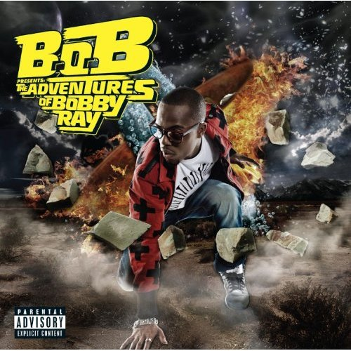

FAVORITE MUSIC
2009-2010 I have been introduced to all new kinds of music. Recently I have been in to rap/hip-hop and rnb. You will never find me without my mp3 player. I love listening to music, and music is my whole life!
Some of my favorite artists now are T.I. ,Drake, Lil Wayne, B.O.B, Gucci Mane, Waka Flocka Flame, Wiz Khalifa, etc. I get all of my musci on Datpiff.com. They have a bunch of mixtapes that are free of new music never heard before!

I have a bunch of Favorite songs. Currently some of them are Drake-Find Your Love, B.O.B-Airplanes, Gucci Mane-Lemonade, etc.